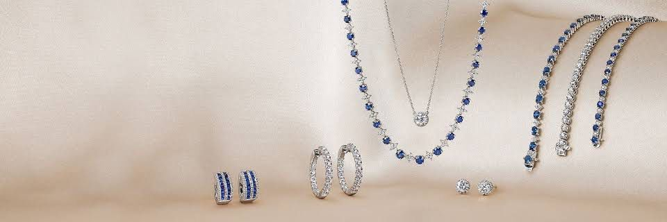
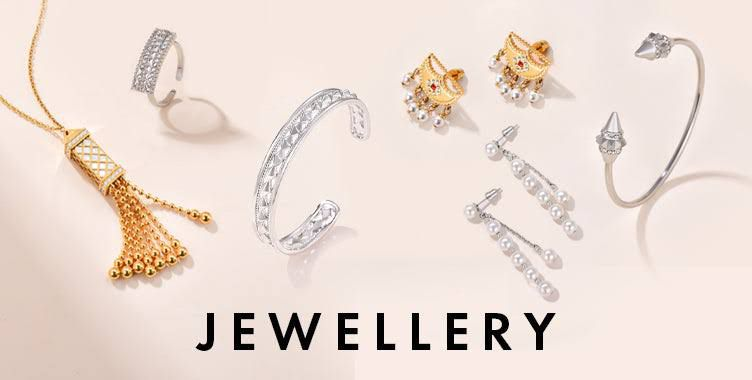
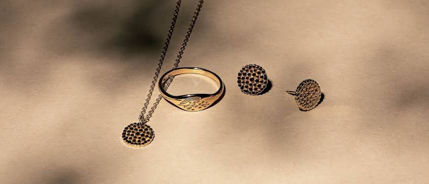

Why Choose Sterling Silver for Everyday Use?

Sterling silver is an excellent choice for daily wear, balancing beauty, durability, and affordability. Here are some reasons why it stands out:
- Durable Yet Affordable: strong enough for everyday wear while remaining cost-effective compared to gold or platinum.
- Hypoallergenic Properties: Perfect for sensitive skin, reducing the risk of irritation and allergies.
- Timeless Style: A versatile look that complements any outfit, suitable for casual or formal events.
- Easy Maintenance: Tarnish can be removed with simple cleaning, keeping the jewelry shiny with regular wear.
- Eco-Friendly: Recyclable material that supports sustainable fashion and lessens environmental impact.
Choosing sterling silver for daily use offers a lasting blend of elegance, ease, and sustainability. Embrace its beauty and make it a part of your everyday style!
Why Wearing Jewelry Boosts Confidence: The KIRA Way

Jewelry has always been more than just an accessory. It can be a powerful tool to enhance your confidence and express your individuality. At KIRA, we believe that the right piece of jewelry can not only elevate your look but also empower you in your everyday life. Here’s why wearing jewelry from our minimalist collection can make a difference in how you feel about yourself:
- Personal Expression, Reinvented: Jewelry is a form of self-expression, and at KIRA, we embrace minimalist designs that speak to your inner confidence. Our jewelry isn’t loud or ostentatious, but rather subtle, elegant, and thoughtfully designed to reflect the wearer’s personality.
- The Power of Minimalism: Minimalist jewelry doesn’t demand attention but draws people in with its quiet sophistication. The KIRA design language is rooted in the belief that simplicity is strength.
- Jewelry as a Confidence Anchor: KIRA designs jewelry that becomes part of your routine—a piece you reach for every day to complete your look, acting as a confidence anchor and reminding you of your inner strength.
- Comfort Meets Style: Confidence comes from feeling good. KIRA’s pieces are lightweight and designed for all-day wear, so you can move through your day without feeling weighed down.
- The Symbolism of Jewelry: Jewelry can symbolize personal milestones or values. KIRA’s minimalist designs allow you to wear pieces that resonate with your journey.
- Sustainable and Ethical Craftsmanship: KIRA uses sustainable materials and ethical craftsmanship, letting you feel good about your choices and aligning with your values.
Wearing jewelry is about more than aesthetics; it’s about how it makes you feel. Discover the power of KIRA jewelry today, and let every piece remind you of your inner strength and timeless beauty.
Why Consider KIRA for Minimalist Jewelry?

At KIRA, we take minimalist design to the next level by blending simplicity with meaningful, intentional craftsmanship. Here’s why KIRA is the ideal choice for your minimalist jewelry collection:
- Unique Design Philosophy: KIRA’s philosophy centers on empowering you with jewelry that reflects inner strength and beauty. Each piece is crafted to be lightweight, comfortable, and versatile.
- Quality Materials: Using only high-quality materials, KIRA’s jewelry is built to last. From sterling silver to hypoallergenic metals, our pieces retain their shine and elegance through daily wear.
- Timeless Pieces for Everyday Wear: Designed for everyday wear, KIRA’s pieces add a touch of elegance to any outfit, making them suitable for any occasion.
- Sustainable and Ethical Practices: KIRA is committed to sustainability, using eco-friendly materials and ethical production methods to ensure that your purchase supports responsible practices.
Minimalist jewelry enhances your natural beauty without overpowering it. Elevate your collection with KIRA, where minimalist design meets timeless elegance.